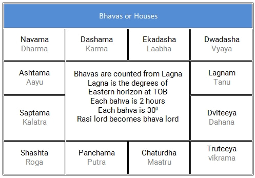

భూకేంద్ర సిద్ధాంతము ప్రకారము, ఆకాశములో సూర్య, చంద్ర, బుధ, కుజ, బుధ, గురు, శుక్ర, శని అనబడే సప్త గ్రహములు రవి మార్గము
లేక కాంతి వృత్తము లేక భచక్రము అనే ఒక వృత్తాకార పరిధిలో తిరుగుతూ ఉంటాయి. దీని వెడల్పు సుమారు 16 డిగ్రీలు ఉంటుంది. చుట్టు
కొలత 360 డిగ్రీలు.
పైన చెప్పబడ్డ సప్త గ్రహములే కాక, రవి మరియు చంద్రుని మార్గములు ఖండించుకునే రెండు బిందువులను ఛాయా గ్రహములు అనే రాహు
కేతువులుగా పరిగణించారు. రాహు కేతువులతో కలిపి మొత్తం 9 గ్రహములు.
రవి మార్గముయొక్క మొత్తం 360 డిగ్రీల భాగాన్ని, 12 రాశులుగా విభజించడమైనది. ఒక్కో రాశి నిడివి 30 డిగ్రీలు ఉంటుంది. ఈ
రాశులకు ఆ పరిసరములలో కనిపించే నక్షత్ర గుంపుల ఆకార ఆధారముగా పేర్లు ఇవ్వబడ్డాయి. మేషము, వృషభము, మిధునము,
కర్కాటకము, సింహము, కన్య, తుల, వృశ్చికము, ధనుస్సు, మకరము, కుంభము, మీనము – ఈ 12 రాశుల పేర్లు.
సప్త గ్రహములైన రవి, చంద్ర, కుజ, బుధ, గురు, శుక్ర, శనులకు 12 రాశుల ఆధిపత్యము ఇవ్వబడింది. రవి - సింహ రాశికి; చంద్రుడు - కర్కాటక రాశికి; కుజుడు - మేష, వృశ్చిక రాశులకు; బుధుడు - మిధున, కన్య రాశులకు; గురువు - ధనుర్మీన రాశులకు; శుక్రుడు - వృషభ, తులా రాశులకు; శని - మకర, కుంభములకు అధిపతులు.
మేష రాశి, అశ్విని నక్షత్ర ప్రారంభము మొదటి రాశిగా తీసుకోబడినది.
మొత్తం 27 నక్షత్రములు ఉంటాయి. ఒక్కొక్క నక్షత్రము నిడివి 13 డిగ్రీల 20
నిముషములు. నక్షత్రములను నాలుగు పాదములుగా విభజిస్తే, ఒక్కొక్క పాదము నిడివి 3 డిగ్రీల 20 నిమిషములుంటుంది. గనుక, ఒక్కొక్క రాశిలో
ఉన్న మొత్తం 30 డిగ్రీలలో 9 నక్షత్ర పాదములు ఉంటాయి.
మనం జన్మించినప్పుడు చంద్రుడున్న నక్షత్రం జన్మ నక్షత్రం. చంద్రుడున్న రాశి జన్మ రాశి.
జన్మ నక్షత్రం ప్రకారం దాని అధిపతితో వింశోత్తరి దశ ఆరంభం అవుతుంది. జన్మ సమయంలో గ్రహ స్థితి మనకి ఏమి రాసి పెట్టి ఉందో
సూచిస్తుంది. దశలు అవి ఎప్పుడు జరగచ్చో చెబుతుంది. దశలకు, తత్సమయంలో ఉన్న గోచారం అనే గ్రహ స్థితి కలిపి ఫలిత విశ్లేషణ చేయాలి.
చంద్రుడు ఒక్కొక రాశిలో సుమారు రెండున్న రోజులు ఉంటాడు. రవి రాశిలో 30 రోజులుంటాడు. గురువు సుమారు సంవత్సరం, శని రెండున్నరేళ్ళు ఉంటారు.
ఈ 27 నక్షత్రములను తొమ్మిదేసి నక్షత్రముల చొప్పున, మూడు నవకములుగా విభజించి, 9 గ్రహములకు నక్షత్ర ఆధిపత్యం ఇవ్వబడింది. కేతు , శుక్ర , రవి , చంద్ర , కుజ , రాహు , గురు , శని , బుధ – గ్రహములు ఒక్కొక్క నవకములో , అశ్విని లగాయతు నక్షత్రాధిపతులు అగుదురు. మూడు నవకములలో ఉన్న నక్షత్రముల పేర్లు – 1. అశ్వని, భరణి, కృత్తిక, రోహిణి, మృగశిర, ఆరుద్ర, పునర్వసు, పుష్యమి, ఆశ్లేష 2. మఖ, పుబ్బ, ఉత్తర, హస్త, చిత్త, స్వాతి, విశాఖ, అనూరాధ, జ్యేష్ట 3. మూల, పూర్వాషాడ, ఉత్తరాషాడ, శ్రవణం, ధనిష్ట, శతభిషం, పూర్వాభాద్ర, ఉత్తరాభాద్ర, రేవతి.
ఒక రోజు సూర్యోదయము నుండి మరునాటి సూర్యోదయము వరకు ఉన్న కాలము సుమారు 24 గంటలు అయిన
దిన ప్రమాణము. సూర్య గ్రహము, రవి మార్గము చుట్టూ తిరగటానికి పట్టే సమయాన్ని కూడా 12 భాగములు చేస్తే 12 భావములు అవుతాయి.
ఒక రోజులో సూర్యుడు ఒక్కొక్క భావములో రెండు గంటలు ఉన్నట్లౌతుంది. ఒక వ్యక్తి జన్మించినపుడు, తూర్పు క్షితిజము ( eastern horizon) , రవి మార్గము
ఖండించుకునే బిందువుని లగ్నము అంటారు. ఈ లగ్నము ప్రధమ భావముగా తీసికొనబడుతుంది. ఈ విధంగా లగ్నాతు 12 భావములతో
జాతకుల ఫల విశ్లేషణ చేయడం జరుగుతుంది.
రవి మార్గం మొత్తం 360 డిగ్రీలలో 27 నక్షత్రాలు ముఖ్యంగా ఉన్నాయి అన్నారు. ఈ నక్షత్ర గుంపులను 12 రాశులు చేసారు. ఆపైన రోజులో 24 గంటలను రెండు రెండు గంటల
చొప్పున మళ్లి 12 భాగాలు చేసారు. వాటిని లగ్నాతు 12 భావాలు అన్నారు.
ఇక్కడ రవి వృషభ రాశిలో ఉన్నాడు. అంటే అది సుమారు మే 15 నుండి జూన్ 15 అన్నమాట. అది మే 20 అనునుకుందాం. ఆ రోజు సూర్యోదయ సమయం 6:00
అనుకుందాం. సూర్యోదయం అంటే ఏమిటి? సూర్యుడు తూర్పు దిక్కున లేచి భూమి పైకి కనబడటమే. అంటే ఆ రోజు 6:00 కి పుట్టిన వ్యక్తికి లగ్నం అదే వృషభం అవుతుంది.
లగ్నంలో సూర్యుడు ఉన్నట్లే. సుమారు రెండు గంటల తరువాత పుట్టిన వ్యక్తికి లగ్నం మిధునం అవుతుంది. రవి వ్యయంలో ఉంటాడు. ఇక్కడ ఇచ్చిన బొమ్మలో రవి దశమంలో ఉన్నాడు.
అంటే జన్మ సుమారు 12:00 నుండి 14:00 మధ్య జరిగినట్లు.
ఒక వ్యక్తి జన్మించినపుడు అతని పూర్వ జన్మ సుకృతముని బట్టి వివిధ గ్రహములు వేర్వేరు నక్షత్రములలో లేక రాశులలో లేక లగ్నాతు భావములలో
ఉండటము జరుగుతుంది. ఈ గ్రహ స్థితి వ్యక్తి యొక్క ప్రారబ్ద కర్మను సూచిస్తుంది. మన కర్మ ప్రకారము శుభా శుభ మిశ్రమ ఫలితములను పొందుతాము. ఇవి ఎప్పుడు
అనుభవంలోకి వస్తాయి అంటే, దశల ప్రకారం వస్తాయి. ఆపైన ఆ సమయంలో గోచారం అనబడే ప్రస్తుత గ్రహ చారం కూడా చూడాలి.
త్వరలో విడుదల...
త్వరలో విడుదల...
త్వరలో విడుదల...
త్వరలో విడుదల...